CODING AGENTS AS PIXEL WORLD MODELS
traex/GPT-6.1-Sol · common50_0032
点击播放 · 原生 RGB 像素
逐轮保存的候选
回放视频、检查图与代码变化。
每份候选均可单独播放。实际图片检查记录在下方工具轨迹中。
候选 01播放与检查图
点击播放 · 原生 RGB 像素
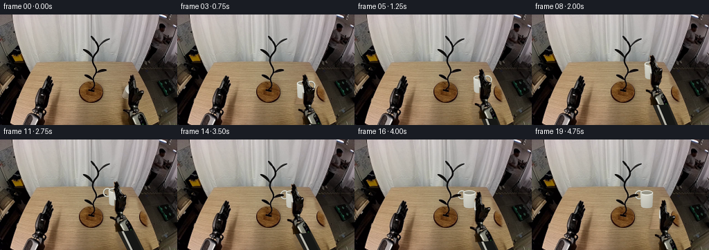
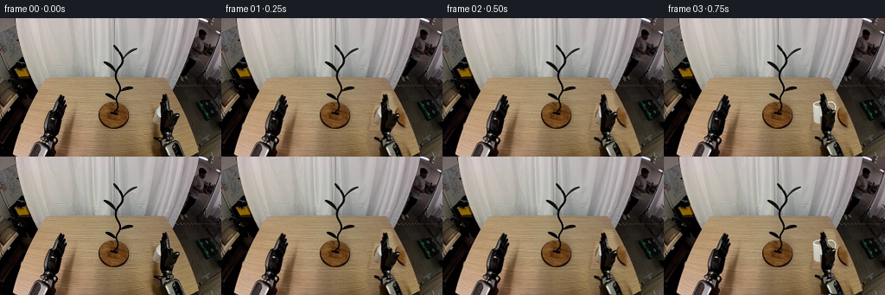
展开代码变化
--- 上一保存版本
+++ 本次保存版本
@@ -0,0 +1,179 @@
+from pathlib import Path
+import math
+import numpy as np
+from PIL import Image, ImageDraw, ImageFilter
+import artifact_io
+
+ROOT=Path(__file__).resolve().parent
+S=4
+W,H=256,160
+src=Image.open(ROOT/'first_frame.png').convert('RGB')
+orig=src.resize((W*S,H*S),Image.Resampling.LANCZOS)
+
+def poly_mask(points,blur=0):
+ m=Image.new('L',(W*S,H*S)); ImageDraw.Draw(m).polygon([(int(x*S),int(y*S)) for x,y in points],fill=255)
+ if blur: m=m.filter(ImageFilter.GaussianBlur(blur*S))
+ return m
+
+# Fill the uncovered wooden surface with illumination-matched grain from
+# the same table. Nothing in the stationary workspace is re-rendered.
+a=np.array(src).astype(float)
+clean=a.copy()
+for y in range(82,H):
+ for x in range(166,220):
+ if y<130: sx=x-87
+ else: sx=x-40
+ clean[y,x]=a[y,sx]
+# Source texture has a small gentle lighting gradient across the tabletop.
+clean=Image.fromarray(np.uint8(np.clip(clean,0,255))).resize(orig.size,Image.Resampling.LANCZOS)
+erase=poly_mask([(186,84),(197,85),(200,101),(211,109),(213,123),(209,137),(220,160),(173,160),(169,145),(170,127),(173,119),(173,109),(178,101),(184,100)],1.3)
+bg=orig.copy(); bg.paste(clean,(0,0),erase)
+
+# Photographed components are carried as rigid cutouts, not optical-flow
+# warps. Their geometry is unchanged throughout the reach.
+handoutline=[(187,87.5),(189,87),(190,89),(191.2,87),(193,89),(194,93),(194.5,102),(195,104.8),(198,105.5),(199,110.7),(203.8,110),(206.5,110),(207.5,112),(206.3,115.2),(204,118),(202.4,123),(199,127.6),(196,132),(196.5,136),(199.6,136.8),(200,139),(197.6,141),(192,141.5),(188,140),(186,135),(184.9,131),(184.2,127),(184,109),(184.2,99),(186.6,96),(186.8,91)]
+fullmask=poly_mask(handoutline,.18)
+palm_mask=poly_mask([(184,104.8),(196,104.8),(199,108),(199,112),(196,121),(200,125),(197,131),(197,136),(200,137),(200,140),(193,142),(188,140),(185,133),(184,126)])
+palm_mask=Image.fromarray(np.minimum(np.array(palm_mask),np.array(fullmask)))
+finger_mask=poly_mask([(183,108),(184,96),(187,94),(187,86),(194,86),(195.8,105.8),(194,109)])
+finger_mask=Image.fromarray(np.minimum(np.array(finger_mask),np.array(fullmask)))
+thumb_mask=poly_mask([(194,111),(198,109),(204,108.5),(209,110),(207,116),(203,122),(198,127),(193.5,126)])
+thumb_mask=Image.fromarray(np.minimum(np.array(thumb_mask),np.array(fullmask)))
+
+def cut(mask):
+ r=orig.convert('RGBA');r.putalpha(mask);return r
+palm=cut(palm_mask); fingers=cut(finger_mask); thumb=cut(thumb_mask)
+hand=cut(fullmask)
+
+# Rigid forearm housing extends below the field of view, so translating
+# the wrist never exposes a cut-off end.
+AW,AH=256*S,245*S
+arm=Image.new('RGBA',(AW,AH))
+ad=ImageDraw.Draw(arm)
+def apoly(p,c): ad.polygon([(x*S,y*S) for x,y in p],fill=c)
+apoly([(189,140),(200,139),(207,151),(243,243),(221,245),(183,150)],(36,34,29,255))
+apoly([(190,142),(199,141),(204,150),(239,243),(230,244),(191,154),(186,151)],(124,125,118,255))
+apoly([(194,142),(200,144),(205,153),(239,243),(233,245),(195,153)],(188,189,182,255))
+apoly([(191,150),(201,146),(207,157),(239,245),(223,245),(192,159)],(22,23,21,255))
+apoly([(187,145),(189,143),(227,245),(224,245)],(180,179,168,255))
+# Original forearm, including bolts, wrist coupling and silver panels.
+fm=poly_mask([(177.5,137),(180,137),(185,139),(188.6,138),(194,137),(199,139),(202,143),(205,147),(208,156),(209,160),(184,160),(184,150),(185,144),(181,141),(178,140)],.15)
+fs=cut(fm); arm.alpha_composite(fs,(0,0))
+
+# Smooth rigid transforms at full working resolution.
+def moved(sprite,dx,dy,ang=0,pivot=(193,139),outsize=None):
+ outsize=outsize or orig.size
+ th=math.radians(ang);c=math.cos(th);s=math.sin(th)
+ px,py=pivot[0]*S,pivot[1]*S
+ # inverse of R*(x-pivot)+pivot+translation
+ tx,ty=px+dx*S,py+dy*S
+ vals=(c,s,px-c*tx-s*ty,-s,c,py+s*tx-c*ty)
+ return sprite.transform(outsize,Image.Transform.AFFINE,vals,Image.Resampling.BICUBIC)
+
+# A ceramic mug, constructed at fixed physical proportions. Perspective
+# around its upright axis moves the handle from the far to the near side.
+MW,MH=56*S,42*S
+rng=np.random.default_rng(22)
+noise=rng.normal(0,.60,(MH,MW))
+
+def mug(yaw):
+ # Coordinates: body centre x=28, rim y=11, base y=32.
+ im=Image.new('RGBA',(MW,MH));d=ImageDraw.Draw(im)
+ def ellipse(box,col,width=0):
+ b=tuple(v*S for v in box)
+ if width:d.ellipse(b,outline=col,width=int(width*S))
+ else:d.ellipse(b,fill=col)
+ side=math.cos(yaw)
+ hx=28+10.9*side
+ rw=6.4*max(.19,abs(side)); ry=6.3
+ # Round ceramic handle: an actual hole through which the peg passes.
+ ellipse((hx-rw,14-ry,hx+rw,14+ry),(122,120,106,255),2.4)
+ ellipse((hx-rw+.1,13.6-ry,hx+rw+.1,13.6+ry),(204,204,192,255),1.65)
+ ellipse((hx-rw+.45,13.3-ry,hx+rw-.10,13.3+ry),(226,225,213,255),.60)
+ mask=Image.new('L',(MW,MH));md=ImageDraw.Draw(mask)
+ # Slight taper and curved base of the ceramic cylinder.
+ pts=[(18.8,10.8),(37.2,10.8),(36.3,28.6),(35.8,31.0),(33.1,32.5),(28,33.0),(22.8,32.4),(20,30.6),(19.5,28.0)]
+ md.polygon([(x*S,y*S) for x,y in pts],fill=255)
+ md.ellipse((18.8*S,7.2*S,37.2*S,14.3*S),fill=255)
+ yy,xx=np.mgrid[:MH,:MW];x=xx/S;y=yy/S
+ # Diffuse left lighting, broad curved shading and warm table bounce.
+ sh=211-28*((x-25)/13)**2-1.1*(y-12)+noise
+ sh+=4*np.exp(-((x-22)/2)**2)
+ body=np.zeros((MH,MW,4),np.uint8)
+ body[:,:,0]=np.clip(sh+2,0,255);body[:,:,1]=np.clip(sh+1,0,255);body[:,:,2]=np.clip(sh-10,0,255)
+ body[:,:,3]=np.array(mask)
+ im.alpha_composite(Image.fromarray(body))
+ d=ImageDraw.Draw(im)
+ ellipse((18.8,7.2,37.2,14.3),(226,226,217,255))
+ ellipse((20.0,8.2,36.1,13.0),(117,115,102,255))
+ ellipse((20.6,8.9,35.8,13.0),(150,148,133,255))
+ d.arc((19.3*S,7.7*S,36.8*S,13.9*S),0,180,fill=(237,237,228,255),width=int(1.0*S))
+ d.arc((20.1*S,8.2*S,36.1*S,13*S),180,345,fill=(191,191,180,255),width=int(.65*S))
+ # The left handle is frontmost only at the placement pose.
+ if side<-.55:
+ # Small white ceramic roots along the left side.
+ d.line([(19.7*S,10.4*S),(20.1*S,18.4*S)],fill=(206,206,195,255),width=2*S)
+ return im
+
+# Poses describe the wrist translation. Vertical clearance precedes the
+# leftward transport and a short descent seats the handle on the branch.
+poses=[(0,0),( -.8,0),(-2.5,0),(-3,-1),(-3.5,-4),(-4,-9),(-6,-16),(-9,-24),(-13,-29),(-17,-30),(-19,-29),(-19,-27),(-19,-24),(-19,-23.5),(-19,-23.5),(-17,-20),(-11,-12),(-4,-4),(0,0),(0,0)]
+# First-frame cup centre is just to the left of the photographed palm.
+# The known visible mug pixels are retained until pickup.
+old_mug_mask=poly_mask([(176.2,119),(176.3,112),(178,107),(180,104),(185,101),(187,103),(186,122),(181,123),(177,121)],.35)
+old_mug=cut(old_mug_mask)
+
+def shadow_layer(dx,dy,cx,cy,lift):
+ layer=Image.new('RGBA',orig.size);d=ImageDraw.Draw(layer)
+ # Soft table shadows weaken as the payload rises.
+ if cy>100:
+ op=int(36*max(0,(cy-100)/12))
+ d.ellipse(((cx-11)*S,121*S,(cx+9)*S,133*S),fill=(50,39,20,op))
+ pts=[(183+dx*.75,132),(195+dx*.6,128),(211+dx*.6,160),(177+dx*.6,160)]
+ d.polygon([(x*S,y*S) for x,y in pts],fill=(49,37,20,45 if lift<15 else 27))
+ return layer.filter(ImageFilter.GaussianBlur(2.4*S))
+
+frames=[np.array(src)]
+for k in range(1,20):
+ dx,dy=poses[k]
+ img=bg.convert('RGBA')
+ if k<3: cx,cy=185,112.5
+ elif k<=14:cx,cy=185+dx,112.5+dy
+ else:cx,cy=166,89
+ img.alpha_composite(shadow_layer(dx,dy,cx,cy,-dy))
+ if k<3:
+ img.alpha_composite(old_mug)
+ else:
+ # Rotation is a controlled yaw around the vertical cup axis.
+ yaw=math.pi*min(1,max(0,(k-5)/6))
+ mg=mug(yaw)
+ img.alpha_composite(mg,(round((cx-28)*S),round((cy-22.5)*S)))
+ # Once the handle passes over the branch, the peg sits in front of
+ # the far ceramic edge and visibly inside the ring.
+ if k>=12:
+ peg_mask=poly_mask([(146.4,79.8),(150,78.6),(154.3,79),(154.5,81.6),(151.5,82.7),(146.4,83.2)],.1)
+ arr=np.array(orig)
+ pm=np.array(peg_mask)
+ pm=np.where(arr[:,:,:3].mean(axis=2)<70,pm,0).astype('uint8')
+ peg=orig.convert('RGBA');peg.putalpha(Image.fromarray(pm));img.alpha_composite(peg)
+ # Forearm heading is adjusted around its wrist; the hand remains
+ # stable with only independent finger hinges used to close/release.
+ armang=-math.degrees(math.atan2(22-dx,71-dy))+math.degrees(math.atan2(22,71))
+ img.alpha_composite(moved(arm,dx,dy,armang))
+ close=min(1,max(0,(k-1)/2)) if k<=14 else max(0,1-(k-14)/2)
+ if close<.01:
+ img.alpha_composite(moved(hand,dx,dy))
+ else:
+ img.alpha_composite(moved(palm,dx,dy))
+ f=moved(fingers,0,0,-12*close,pivot=(190,108))
+ t=moved(thumb,0,0,-23*close,pivot=(195,125))
+ img.alpha_composite(moved(f,dx,dy))
+ img.alpha_composite(moved(t,dx,dy))
+ frames.append(np.array(img.convert('RGB').resize((W,H),Image.Resampling.LANCZOS)))
+frames=np.stack(frames).astype(np.uint8)
+artifact_io.save(frames,ROOT)
+# Larger intermediate contact sheet is convenient for visual inspection.
+sheet=Image.new('RGB',(W*5,H*4))
+for k,f in enumerate(frames):sheet.paste(Image.fromarray(f),((k%5)*W,(k//5)*H))
+sheet.resize((W*10,H*8)).save(ROOT/'.tmp'/'contact.png')
+bg.resize((1024,640)).save(ROOT/'.tmp'/'background.png')
候选 02播放与检查图
点击播放 · 原生 RGB 像素
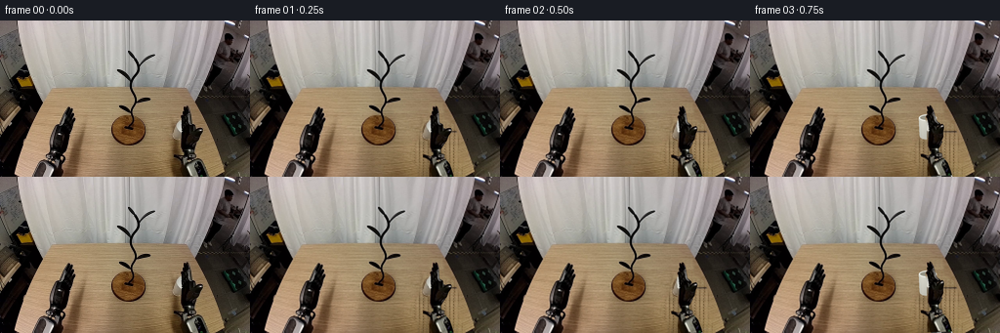
展开代码变化
--- 上一保存版本
+++ 本次保存版本
@@ -19,14 +19,27 @@
# the same table. Nothing in the stationary workspace is re-rendered.
a=np.array(src).astype(float)
clean=a.copy()
+# Reuse unobstructed fine wood grain, with row lighting normalized. The
+# table boundary is protected explicitly from the inpainted region.
for y in range(82,H):
- for x in range(166,220):
- if y<130: sx=x-87
- else: sx=x-40
- clean[y,x]=a[y,sx]
-# Source texture has a small gentle lighting gradient across the tabletop.
+ donor=a[y,78:109]
+ donor_mean=donor.mean(axis=0)
+ left=np.median(a[y,150:164],axis=0)
+ if y>=113:right=np.median(a[y,213:218],axis=0)
+ else:right=left-np.array([7,9,11])
+ for x in range(166,221):
+ u=np.clip((x-160)/55,0,1)
+ target=left*(1-u)+right*u
+ clean[y,x]=target+(donor[(x*7+y%3)%31]-donor_mean)*.65
clean=Image.fromarray(np.uint8(np.clip(clean,0,255))).resize(orig.size,Image.Resampling.LANCZOS)
-erase=poly_mask([(186,84),(197,85),(200,101),(211,109),(213,123),(209,137),(220,160),(173,160),(169,145),(170,127),(173,119),(173,109),(178,101),(184,100)],1.3)
+erase=poly_mask([(183.5,84),(197,84),(199,100),(211,108),(214,122),(212,138),(220,160),(172,160),(168.5,144),(169,126),(173,121),(174,110),(178,102),(183.5,98)],.85)
+# The right edge of the wood is a fixed perspective line.
+eb=np.array(erase)
+yy,xx=np.mgrid[:H*S,:W*S]
+edge=197.4+(yy/S-82)*.451
+eb=np.minimum(eb,np.uint8(np.clip((edge-xx/S)*S,0,1)*255))
+erase=Image.fromarray(eb)
+
bg=orig.copy(); bg.paste(clean,(0,0),erase)
# Photographed components are carried as rigid cutouts, not optical-flow
@@ -51,11 +64,25 @@
arm=Image.new('RGBA',(AW,AH))
ad=ImageDraw.Draw(arm)
def apoly(p,c): ad.polygon([(x*S,y*S) for x,y in p],fill=c)
-apoly([(189,140),(200,139),(207,151),(243,243),(221,245),(183,150)],(36,34,29,255))
-apoly([(190,142),(199,141),(204,150),(239,243),(230,244),(191,154),(186,151)],(124,125,118,255))
-apoly([(194,142),(200,144),(205,153),(239,243),(233,245),(195,153)],(188,189,182,255))
-apoly([(191,150),(201,146),(207,157),(239,245),(223,245),(192,159)],(22,23,21,255))
-apoly([(187,145),(189,143),(227,245),(224,245)],(180,179,168,255))
+# Constant section metal enclosure, shaded across its width, with a
+# recessed dark central panel. Texture is derived from the source housing.
+poly=[(185.4,145),(195.0,140.6),(204,147),(241,243),(222,246),(184.0,151)]
+am=Image.new('L',(AW,AH));ImageDraw.Draw(am).polygon([(x*S,y*S) for x,y in poly],fill=255)
+yy,xx=np.mgrid[:AH,:AW]
+center=195.0+.39*(yy/S-145)
+z=(xx/S-center)/10.3
+lum=128+31*np.cos(np.clip(z,-1,1)*math.pi*.60)
+# Dark inset with a bright rim and a rounded edge rather than a stripe.
+inside=(z>-.28)&(z<.73)&(yy/S>149)
+lum=np.where(inside,29+9*(1-z),lum)
+lum=np.where((z>.67)&(z<.82),184,lum)
+lum=np.where((z<-.73),58+25*(z+1),lum)
+tex=a[145:158,189:206].mean(axis=2)
+noise=tex[(yy//2)%13,(xx//2)%17]-tex.mean()
+lum+=noise*.09
+rgb=np.stack([lum+2,lum+2,lum-3],axis=2)
+aa=np.concatenate([np.uint8(np.clip(rgb,0,255)),np.array(am)[:,:,None]],axis=2)
+arm=Image.fromarray(aa)
# Original forearm, including bolts, wrist coupling and silver panels.
fm=poly_mask([(177.5,137),(180,137),(185,139),(188.6,138),(194,137),(199,139),(202,143),(205,147),(208,156),(209,160),(184,160),(184,150),(185,144),(181,141),(178,140)],.15)
fs=cut(fm); arm.alpha_composite(fs,(0,0))
@@ -145,7 +172,7 @@
img.alpha_composite(old_mug)
else:
# Rotation is a controlled yaw around the vertical cup axis.
- yaw=math.pi*min(1,max(0,(k-5)/6))
+ yaw=math.pi/2+math.pi/2*min(1,max(0,(k-5)/6))
mg=mug(yaw)
img.alpha_composite(mg,(round((cx-28)*S),round((cy-22.5)*S)))
# Once the handle passes over the branch, the peg sits in front of
候选 03播放与检查图
点击播放 · 原生 RGB 像素
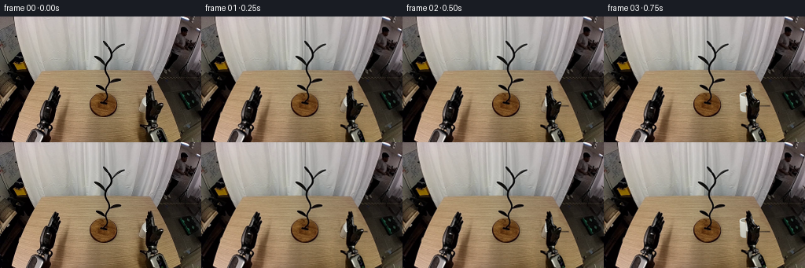
展开代码变化
--- 上一保存版本
+++ 本次保存版本
@@ -22,7 +22,7 @@
# Reuse unobstructed fine wood grain, with row lighting normalized. The
# table boundary is protected explicitly from the inpainted region.
for y in range(82,H):
- donor=a[y,78:109]
+ donor=a[y,93:109]
donor_mean=donor.mean(axis=0)
left=np.median(a[y,150:164],axis=0)
if y>=113:right=np.median(a[y,213:218],axis=0)
@@ -30,7 +30,7 @@
for x in range(166,221):
u=np.clip((x-160)/55,0,1)
target=left*(1-u)+right*u
- clean[y,x]=target+(donor[(x*7+y%3)%31]-donor_mean)*.65
+ clean[y,x]=target+(donor[(x+y%3)%16]-donor_mean)*.65
clean=Image.fromarray(np.uint8(np.clip(clean,0,255))).resize(orig.size,Image.Resampling.LANCZOS)
erase=poly_mask([(183.5,84),(197,84),(199,100),(211,108),(214,122),(212,138),(220,160),(172,160),(168.5,144),(169,126),(173,121),(174,110),(178,102),(183.5,98)],.85)
# The right edge of the wood is a fixed perspective line.
候选 04播放与检查图
点击播放 · 原生 RGB 像素
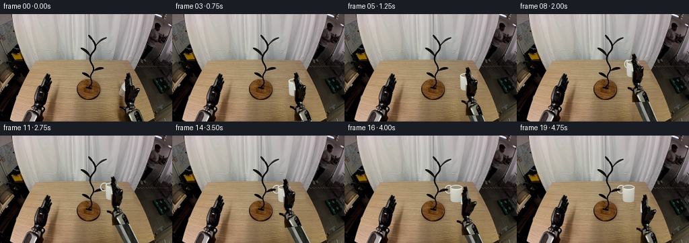
展开代码变化
--- 上一保存版本
+++ 本次保存版本
@@ -25,7 +25,7 @@
donor=a[y,93:109]
donor_mean=donor.mean(axis=0)
left=np.median(a[y,150:164],axis=0)
- if y>=113:right=np.median(a[y,213:218],axis=0)
+ if y>=116:right=np.median(a[y,213:218],axis=0)
else:right=left-np.array([7,9,11])
for x in range(166,221):
u=np.clip((x-160)/55,0,1)
可观测工具轨迹
实际执行的命令与返回图片。
命令 1exit 0
/bin/bash -lc "ls -la && cat prompt.txt && printf '\\n---RULES---\\n' && cat GENERATION_RULES.md"
命令 2exit 0
/bin/bash -lc "cat task_spec.json && cat artifact_io.py && python - <<'PY'
from PIL import Image
im=Image.open('first_frame.png')
print(im.size)
im.resize((1024,640)).save('.tmp/first_large.png')
PY"命令 3exit 0
/bin/bash -lc "python - <<'PY'
from PIL import Image
im=Image.open('first_frame.png')
im.crop((160,75,218,160)).resize((464,680)).save('.tmp/hand.png')
im.crop((113,24,158,113)).resize((360,712)).save('.tmp/tree.png')
PY"命令 4exit 0
/bin/bash -lc "python - <<'PY'
from PIL import Image,ImageDraw
im=Image.open('first_frame.png').resize((1024,640))
d=ImageDraw.Draw(im)
for x in range(160,225,5):
d.line((x*4,80*4,x*4,640),fill=(255,70,70),width=1); d.text((x*4,320),str(x),fill='red')
for y in range(85,160,5):
d.line((160*4,y*4,225*4,y*4),fill=(255,70,70),width=1);d.text((640,y*4),str(y),fill='red')
im.crop((640,320,912,640)).resize((680,800)).save('.tmp/grid.png')
PY"命令 5exit 0
/bin/bash -lc "cat > generate.py <<'PY'
from pathlib import Path
import math
import numpy as np
from PIL import Image, ImageDraw, ImageFilter
import artifact_io
ROOT=Path(__file__).resolve().parent
S=4
W,H=256,160
src=Image.open(ROOT/'first_frame.png').convert('RGB')
orig=src.resize((W*S,H*S),Image.Resampling.LANCZOS)
def poly_mask(points,blur=0):
m=Image.new('L',(W*S,H*S)); ImageDraw.Draw(m).polygon([(int(x*S),int(y*S)) for x,y in points],fill=255)
if blur: m=m.filter(ImageFilter.GaussianBlur(blur*S))
return m
# Fill the uncovered wooden surface with illumination-matched grain from
# the same table. Nothing in the stationary workspace is re-rendered.
a=np.array(src).astype(float)
clean=a.copy()
for y in range(82,H):
for x in range(166,220):
if y<130: sx=x-87
else: sx=x-40
clean[y,x]=a[y,sx]
# Source texture has a small gentle lighting gradient across the tabletop.
clean=Image.fromarray(np.uint8(np.clip(clean,0,255))).resize(orig.size,Image.Resampling.LANCZOS)
erase=poly_mask([(186,84),(197,85),(200,101),(211,109),(213,123),(209,137),(220,160),(173,160),(169,145),(170,127),(173,119),(173,109),(178,101),(184,100)],1.3)
bg=orig.copy(); bg.paste(clean,(0,0),erase)
# Photographed components are carried as rigid cutouts, not optical-flow
# warps. Their geometry is unchanged throughout the reach.
handoutline=[(187,87.5),(189,87),(190,89),(191.2,87),(193,89),(194,93),(194.5,102),(195,104.8),(198,105.5),(199,110.7),(203.8,110),(206.5,110),(207.5,112),(206.3,115.2),(204,118),(202.4,123),(199,127.6),(196,132),(196.5,136),(199.6,136.8),(200,139),(197.6,141),(192,141.5),(188,140),(186,135),(184.9,131),(184.2,127),(184,109),(184.2,99),(186.6,96),(186.8,91)]
fullmask=poly_mask(handoutline,.18)
palm_mask=poly_mask([(184,104.8),(196,104.8),(199,108),(199,112),(196,121),(200,125),(197,131),(197,136),(200,137),(200,140),(193,142),(188,140),(185,133),(184,126)])
palm_mask=Image.fromarray(np.minimum(np.array(palm_mask),np.array(fullmask)))
finger_mask=poly_mask([(183,108),(184,96),(187,94),(187,86),(194,86),(195.8,105.8),(194,109)])
finger_mask=Image.fromarray(np.minimum(np.array(finger_mask),np.array(fullmask)))
thumb_mask=poly_mask([(194,111),(198,109),(204,108.5),(209,110),(207,116),(203,122),(198,127),(193.5,126)])
thumb_mask=Image.fromarray(np.minimum(np.array(thumb_mask),np.array(fullmask)))
def cut(mask):
r=orig.convert('RGBA');r.putalpha(mask);return r
palm=cut(palm_mask); fingers=cut(finger_mask); thumb=cut(thumb_mask)
hand=cut(fullmask)
# Rigid forearm housing extends below the field of view, so translating
# the wrist never exposes a cut-off end.
AW,AH=256*S,245*S
arm=Image.new('RGBA',(AW,AH))
ad=ImageDraw.Draw(arm)
def apoly(p,c): ad.polygon([(x*S,y*S) for x,y in p],fill=c)
apoly([(189,140),(200,139),(207,151),(243,243),(221,245),(183,150)],(36,34,29,255))
apoly([(190,142),(199,141),(204,150),(239,243),(230,244),(191,154),(186,151)],(124,125,118,255))
apoly([(194,142),(200,144),(205,153),(239,243),(233,245),(195,153)],(188,189,182,255))
apoly([(191,150),(201,146),(207,157),(239,245),(223,245),(192,159)],(22,23,21,255))
apoly([(187,145),(189,143),(227,245),(224,245)],(180,179,168,255))
# Original forearm, including bolts, wrist coupling and silver panels.
fm=poly_mask([(177.5,137),(180,137),(185,139),(188.6,138),(194,137),(199,139),(202,143),(205,147),(208,156),(209,160),(184,160),(184,150),(185,144),(181,141),(178,140)],.15)
fs=cut(fm); arm.alpha_composite(fs,(0,0))
# Smooth rigid transforms at full working resolution.
def moved(sprite,dx,dy,ang=0,pivot=(193,139),outsize=None):
outsize=outsize or orig.size
th=math.radians(ang);c=math.cos(th);s=math.sin(th)
px,py=pivot[0]*S,pivot[1]*S
# inverse of R*(x-pivot)+pivot+translation
tx,ty=px+dx*S,py+dy*S
vals=(c,s,px-c*tx-s*ty,-s,c,py+s*tx-c*ty)
return sprite.transform(outsize,Image.Transform.AFFINE,vals,Image.Resampling.BICUBIC)
# A ceramic mug, constructed at fixed physical proportions. Perspective
# around its upright axis moves the handle from the far to the near side.
MW,MH=56*S,42*S
rng=np.random.default_rng(22)
noise=rng.normal(0,.60,(MH,MW))
def mug(yaw):
# Coordinates: body centre x=28, rim y=11, base y=32.
im=Image.new('RGBA',(MW,MH));d=ImageDraw.Draw(im)
def ellipse(box,col,width=0):
b=tuple(v*S for v in box)
if width:d.ellipse(b,outline=col,width=int(width*S))
else:d.ellipse(b,fill=col)
side=math.cos(yaw)
hx=28+10.9*side
rw=6.4*max(.19,abs(side)); ry=6.3
# Round ceramic handle: an actual hole through which the peg passes.
ellipse((hx-rw,14-ry,hx+rw,14+ry),(122,120,106,255),2.4)
ellipse((hx-rw+.1,13.6-ry,hx+rw+.1,13.6+ry),(204,204,192,255),1.65)
ellipse((hx-rw+.45,13.3-ry,hx+rw-.10,13.3+ry),(226,225,213,255),.60)
mask=Image.new('L',(MW,MH));md=ImageDraw.Draw(mask)
# Slight taper and curved base of the ceramic cylinder.
pts=[(18.8,10.8),(37.2,10.8),(36.3,28.6),(35.8,31.0),(33.1,32.5),(28,33.0),(22.8,32.4),(20,30.6),(19.5,28.0)]
md.polygon([(x*S,y*S) for x,y in pts],fill=255)
md.ellipse((18.8*S,7.2*S,37.2*S,14.3*S),fill=255)
yy,xx=np.mgrid[:MH,:MW];x=xx/S;y=yy/S
# Diffuse left lighting, broad curved shading and warm table bounce.
sh=211-28*((x-25)/13)**2-1.1*(y-12)+noise
sh+=4*np.exp(-((x-22)/2)**2)
body=np.zeros((MH,MW,4),np.uint8)
body[:,:,0]=np.clip(sh+2,0,255);body[:,:,1]=np.clip(sh+1,0,255);body[:,:,2]=np.clip(sh-10,0,255)
body[:,:,3]=np.array(mask)
im.alpha_composite(Image.fromarray(body))
d=ImageDraw.Draw(im)
ellipse((18.8,7.2,37.2,14.3),(226,226,217,255))
ellipse((20.0,8.2,36.1,13.0),(117,115,102,255))
ellipse((20.6,8.9,35.8,13.0),(150,148,133,255))
d.arc((19.3*S,7.7*S,36.8*S,13.9*S),0,180,fill=(237,237,228,255),width=int(1.0*S))
d.arc((20.1*S,8.2*S,36.1*S,13*S),180,345,fill=(191,191,180,255),width=int(.65*S))
# The left handle is frontmost only at the placement pose.
if side<-.55:
# Small white ceramic roots along the left side.
d.line([(19.7*S,10.4*S),(20.1*S,18.4*S)],fill=(206,206,195,255),width=2*S)
return im
# Poses describe the wrist translation. Vertical clearance precedes the
# leftward transport and a short descent seats the handle on the branch.
poses=[(0,0),( -.8,0),(-2.5,0),(-3,-1),(-3.5,-4),(-4,-9),(-6,-16),(-9,-24),(-13,-29),(-17,-30),(-19,-29),(-19,-27),(-19,-24),(-19,-23.5),(-19,-23.5),(-17,-20),(-11,-12),(-4,-4),(0,0),(0,0)]
# First-frame cup centre is just to the left of the photographed palm.
# The known visible mug pixels are retained until pickup.
old_mug_mask=poly_mask([(176.2,119),(176.3,112),(178,107),(180,104),(185,101),(187,103),(186,122),(181,123),(177,121)],.35)
old_mug=cut(old_mug_mask)
def shadow_layer(dx,dy,cx,cy,lift):
layer=Image.new('RGBA',orig.size);d=ImageDraw.Draw(layer)
# Soft table shadows weaken as the payload rises.
if cy>100:
op=int(36*max(0,(cy-100)/12))
d.ellipse(((cx-11)*S,121*S,(cx+9)*S,133*S),fill=(50,39,20,op))
pts=[(183+dx*.75,132),(195+dx*.6,128),(211+dx*.6,160),(177+dx*.6,160)]
d.polygon([(x*S,y*S) for x,y in pts],fill=(49,37,20,45 if lift<15 else 27))
return layer.filter(ImageFilter.GaussianBlur(2.4*S))
frames=[np.array(src)]
for k in range(1,20):
dx,dy=poses[k]
img=bg.convert('RGBA')
if k<3: cx,cy=185,112.5
elif k<=14:cx,cy=185+dx,112.5+dy
else:cx,cy=166,89
img.alpha_composite(shadow_layer(dx,dy,cx,cy,-dy))
if k<3:
img.alpha_composite(old_mug)
else:
# Rotation is a controlled yaw around the vertical cup axis.
yaw=math.pi*min(1,max(0,(k-5)/6))
mg=mug(yaw)
img.alpha_composite(mg,(round((cx-28)*S),round((cy-22.5)*S)))
# Once the handle passes over the branch, the peg sits in front of
# the far ceramic edge and visibly inside the ring.
if k>=12:
peg_mask=poly_mask([(146.4,79.8),(150,78.6),(154.3,79),(154.5,81.6),(151.5,82.7),(146.4,83.2)],.1)
arr=np.array(orig)
pm=np.array(peg_mask)
pm=np.where(arr[:,:,:3].mean(axis=2)<70,pm,0).astype('uint8')
peg=orig.convert('RGBA');peg.putalpha(Image.fromarray(pm));img.alpha_composite(peg)
# Forearm heading is adjusted around its wrist; the hand remains
# stable with only independent finger hinges used to close/release.
armang=-math.degrees(math.atan2(22-dx,71-dy))+math.degrees(math.atan2(22,71))
img.alpha_composite(moved(arm,dx,dy,armang))
close=min(1,max(0,(k-1)/2)) if k<=14 else max(0,1-(k-14)/2)
if close<.01:
img.alpha_composite(moved(hand,dx,dy))
else:
img.alpha_composite(moved(palm,dx,dy))
f=moved(fingers,0,0,-12*close,pivot=(190,108))
t=moved(thumb,0,0,-23*close,pivot=(195,125))
img.alpha_composite(moved(f,dx,dy))
img.alpha_composite(moved(t,dx,dy))
frames.append(np.array(img.convert('RGB').resize((W,H),Image.Resampling.LANCZOS)))
frames=np.stack(frames).astype(np.uint8)
artifact_io.save(frames,ROOT)
# Larger intermediate contact sheet is convenient for visual inspection.
sheet=Image.new('RGB',(W*5,H*4))
for k,f in enumerate(frames):sheet.paste(Image.fromarray(f),((k%5)*W,(k//5)*H))
sheet.resize((W*10,H*8)).save(ROOT/'.tmp'/'contact.png')
bg.resize((1024,640)).save(ROOT/'.tmp'/'background.png')
PY
python generate.py"命令 6exit 0
/bin/bash -lc "python - <<'PY'
from PIL import Image
import numpy as np
im=np.array(Image.open('first_frame.png'))
for y in [90,100,110,120,130,140,150]:
print(y,[(x,im[y,x].tolist()) for x in [100,107,160,165,210,215]])
Image.open('frames/19.png').resize((1024,640)).save('.tmp/end.png')
PY"命令 7exit 0
/bin/bash -lc "python - <<'PY'
from PIL import Image
import numpy as np
a=np.array(Image.open('first_frame.png'))
for y in range(90,160,10):
print(y, np.median(a[y,150:164],axis=0),a[y,215])
PY"命令 8exit 0
/bin/bash -lc "python - <<'PY'
p='generate.py'
s=open(p).read()
start=s.index('clean=a.copy()')
end=s.index('\\nbg=orig.copy()',start)
s=s[:start]+'''clean=a.copy()
# Reuse unobstructed fine wood grain, with row lighting normalized. The
# table boundary is protected explicitly from the inpainted region.
for y in range(82,H):
donor=a[y,78:109]
donor_mean=donor.mean(axis=0)
left=np.median(a[y,150:164],axis=0)
if y>=113:right=np.median(a[y,213:218],axis=0)
else:right=left-np.array([7,9,11])
for x in range(166,221):
u=np.clip((x-160)/55,0,1)
target=left*(1-u)+right*u
clean[y,x]=target+(donor[(x*7+y%3)%31]-donor_mean)*.65
clean=Image.fromarray(np.uint8(np.clip(clean,0,255))).resize(orig.size,Image.Resampling.LANCZOS)
erase=poly_mask([(183.5,84),(197,84),(199,100),(211,108),(214,122),(212,138),(220,160),(172,160),(168.5,144),(169,126),(173,121),(174,110),(178,102),(183.5,98)],.85)
# The right edge of the wood is a fixed perspective line.
eb=np.array(erase)
yy,xx=np.mgrid[:H*S,:W*S]
edge=197.4+(yy/S-82)*.451
eb=np.minimum(eb,np.uint8(np.clip((edge-xx/S)*S,0,1)*255))
erase=Image.fromarray(eb)
''' +s[end:]
# Do not force an extra bright handle in front of the gripping finger on pickup.
s=s.replace('yaw=math.pi*min(1,max(0,(k-5)/6))','yaw=math.pi/2+math.pi/2*min(1,max(0,(k-5)/6))')
# Realistic extended wrist housing rounded shade with simple parametric texture.
start=s.index(\"apoly([(189,140)\")
end=s.index('# Original forearm',start)
s=s[:start]+'''# Constant section metal enclosure, shaded across its width, with a
# recessed dark central panel. Texture is derived from the source housing.
poly=[(185.4,145),(195.0,140.6),(204,147),(241,243),(222,246),(184.0,151)]
am=Image.new('L',(AW,AH));ImageDraw.Draw(am).polygon([(x*S,y*S) for x,y in poly],fill=255)
yy,xx=np.mgrid[:AH,:AW]
center=195.0+.39*(yy/S-145)
z=(xx/S-center)/10.3
lum=128+31*np.cos(np.clip(z,-1,1)*math.pi*.60)
# Dark inset with a bright rim and a rounded edge rather than a stripe.
inside=(z>-.28)&(z<.73)&(yy/S>149)
lum=np.where(inside,29+9*(1-z),lum)
lum=np.where((z>.67)&(z<.82),184,lum)
lum=np.where((z<-.73),58+25*(z+1),lum)
tex=a[145:158,189:206].mean(axis=2)
noise=tex[(yy//2)%13,(xx//2)%17]-tex.mean()
lum+=noise*.09
rgb=np.stack([lum+2,lum+2,lum-3],axis=2)
aa=np.concatenate([np.uint8(np.clip(rgb,0,255)),np.array(am)[:,:,None]],axis=2)
arm=Image.fromarray(aa)
''' +s[end:]
open(p,'w').write(s)
PY
python generate.py"命令 9exit 0
/bin/bash -lc "python - <<'PY'
p='generate.py'
s=open(p).read().replace('donor=a[y,78:109]','donor=a[y,93:109]').replace('donor[(x*7+y%3)%31]','donor[(x+y%3)%16]')
open(p,'w').write(s)
PY
python generate.py"命令 10exit 0
/bin/bash -lc "python - <<'PY'
from PIL import Image
import numpy as np
a=np.array(Image.open('first_frame.png')).astype(float)
for y in range(109,116):
print(y,np.median(a[y,150:164],axis=0),np.median(a[y,213:218],axis=0))
PY"命令 11exit 0
/bin/bash -lc "python - <<'PY'
p='generate.py'
s=open(p).read().replace('if y>=113:right=', 'if y>=116:right=')
open(p,'w').write(s)
PY
python generate.py
python - <<'PY'
from PIL import Image
import numpy as np
from pathlib import Path
p=Path('.')
a=np.array(Image.open(p/'first_frame.png').convert('RGB'))
b=np.array(Image.open(p/'frames/00.png').convert('RGB'))
assert np.array_equal(a,b)
fs=np.stack([np.array(Image.open(p/f'frames/{k:02d}.png')) for k in range(20)])
assert fs.shape==(20,160,256,3) and fs.dtype==np.uint8
z=np.load('pixels.npz')['pixels']
assert z.shape==(160,256,20)
print('Validated 20 RGB frames; frame 00 exactly matches input.')
PY"视觉工具实际返回图片 1
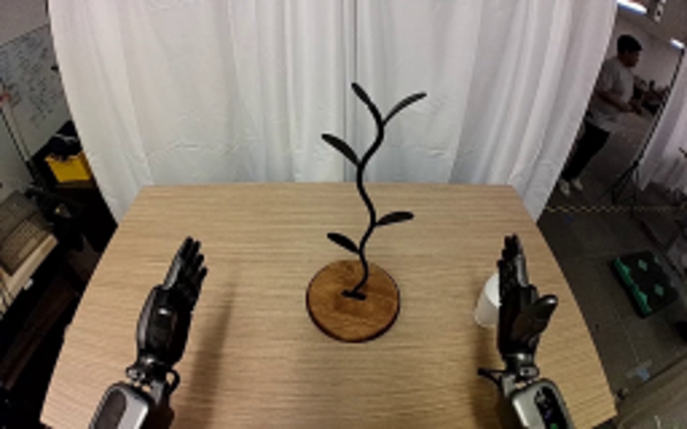
视觉工具实际返回图片 2
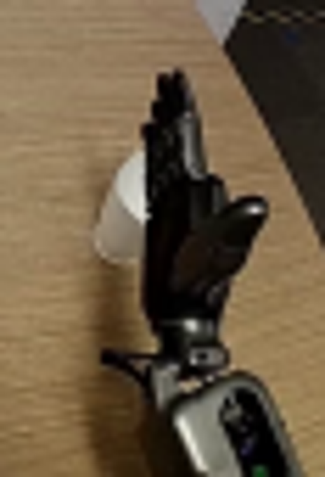
视觉工具实际返回图片 3
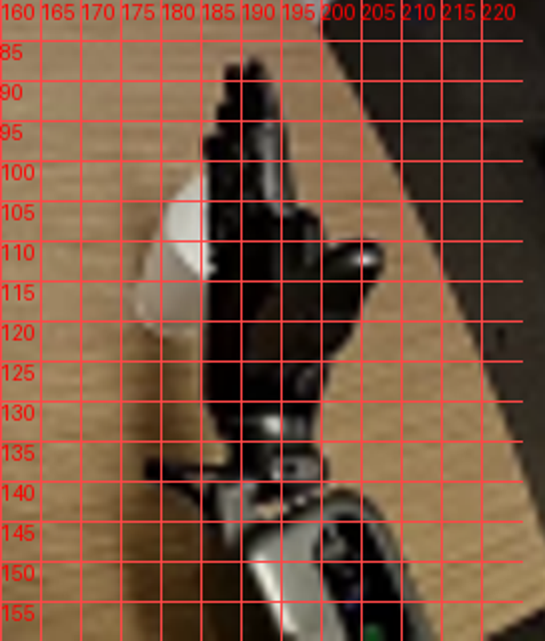
视觉工具实际返回图片 4
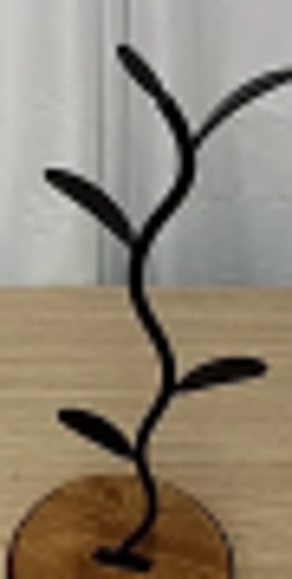
视觉工具实际返回图片 5
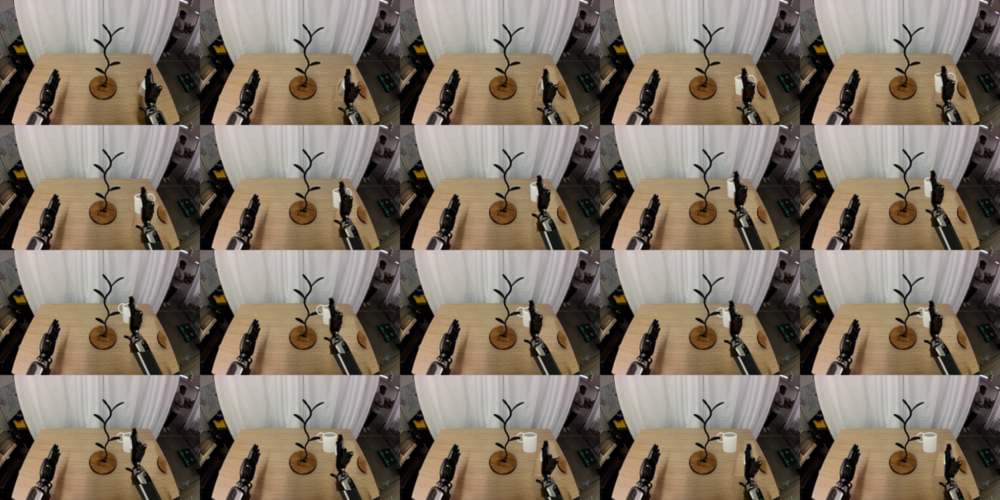
视觉工具实际返回图片 6
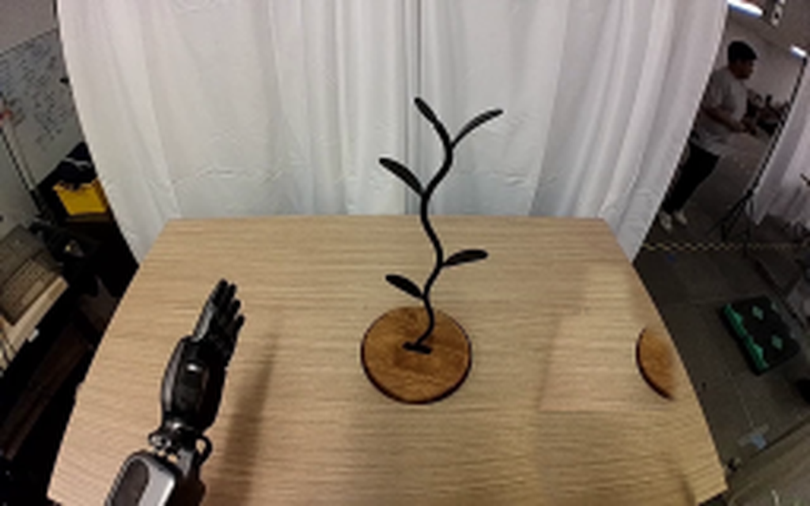
视觉工具实际返回图片 7
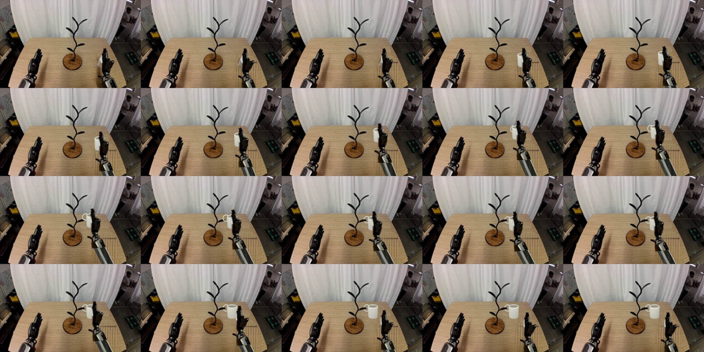
视觉工具实际返回图片 8
视觉工具实际返回图片 9
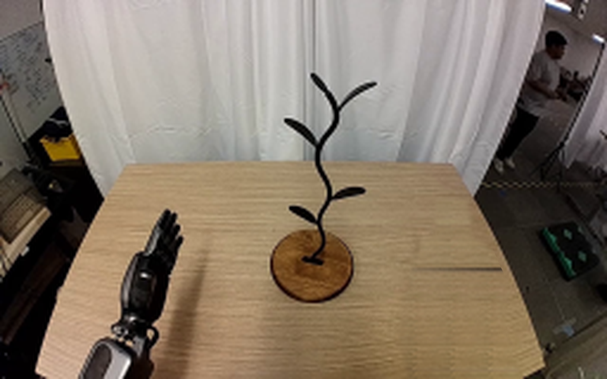
保存候选 4 份；完成命令 11 次；可验证图片返回 9 张。原始 API 响应与完整日志保留在本地。